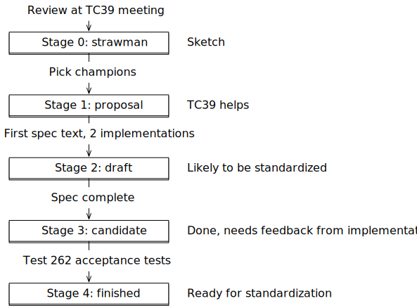

javascript
Interesting resources
Welcome to the world of javascript
or why ()+[]! are all the characters you need
This is a valid javascript program
[][(![]+[])[+[]]+(![]+[])[!+[]+!+[]]+(![]+[])[+!+[]]+(!![]+[])[+[]]][([][(![]+[])[+[]]+(![]+[])[!+[]+!+[]]+(![]+[])[+!+[]]+(!![]+[])[+[]]]+[])[!+[]+!+[]+!+[]]+(!![]+[][(![]+[])[+[]]+(![]+[])[!+[]+!+[]]+(![]+[])[+!+[]]+(!![]+[])[+[]]])[+!+[]+[+[]]]+([][[]]+[])[+!+[]]+(![]+[])[!+[]+!+[]+!+[]]+(!![]+[])[+[]]+(!![]+[])[+!+[]]+([][[]]+[])[+[]]+([][(![]+[])[+[]]+(![]+[])[!+[]+!+[]]+(![]+[])[+!+[]]+(!![]+[])[+[]]]+[])[!+[]+!+[]+!+[]]+(!![]+[])[+[]]+(!![]+[][(![]+[])[+[]]+(![]+[])[!+[]+!+[]]+(![]+[])[+!+[]]+(!![]+[])[+[]]])[+!+[]+[+[]]]+(!![]+[])[+!+[]]]((!![]+[])[+!+[]]+(!![]+[])[!+[]+!+[]+!+[]]+(!![]+[])[+[]]+([][[]]+[])[+[]]+(!![]+[])[+!+[]]+([][[]]+[])[+!+[]]+(+[![]]+[][(![]+[])[+[]]+(![]+[])[!+[]+!+[]]+(![]+[])[+!+[]]+(!![]+[])[+[]]])[+!+[]+[+!+[]]]+(!![]+[])[!+[]+!+[]+!+[]]+(+(!+[]+!+[]+!+[]+[+!+[]]))[(!![]+[])[+[]]+(!![]+[][(![]+[])[+[]]+(![]+[])[!+[]+!+[]]+(![]+[])[+!+[]]+(!![]+[])[+[]]])[+!+[]+[+[]]]+([]+[])[([][(![]+[])[+[]]+(![]+[])[!+[]+!+[]]+(![]+[])[+!+[]]+(!![]+[])[+[]]]+[])[!+[]+!+[]+!+[]]+(!![]+[][(![]+[])[+[]]+(![]+[])[!+[]+!+[]]+(![]+[])[+!+[]]+(!![]+[])[+[]]])[+!+[]+[+[]]]+([][[]]+[])[+!+[]]+(![]+[])[!+[]+!+[]+!+[]]+(!![]+[])[+[]]+(!![]+[])[+!+[]]+([][[]]+[])[+[]]+([][(![]+[])[+[]]+(![]+[])[!+[]+!+[]]+(![]+[])[+!+[]]+(!![]+[])[+[]]]+[])[!+[]+!+[]+!+[]]+(!![]+[])[+[]]+(!![]+[][(![]+[])[+[]]+(![]+[])[!+[]+!+[]]+(![]+[])[+!+[]]+(!![]+[])[+[]]])[+!+[]+[+[]]]+(!![]+[])[+!+[]]][([][[]]+[])[+!+[]]+(![]+[])[+!+[]]+((+[])[([][(![]+[])[+[]]+(![]+[])[!+[]+!+[]]+(![]+[])[+!+[]]+(!![]+[])[+[]]]+[])[!+[]+!+[]+!+[]]+(!![]+[][(![]+[])[+[]]+(![]+[])[!+[]+!+[]]+(![]+[])[+!+[]]+(!![]+[])[+[]]])[+!+[]+[+[]]]+([][[]]+[])[+!+[]]+(![]+[])[!+[]+!+[]+!+[]]+(!![]+[])[+[]]+(!![]+[])[+!+[]]+([][[]]+[])[+[]]+([][(![]+[])[+[]]+(![]+[])[!+[]+!+[]]+(![]+[])[+!+[]]+(!![]+[])[+[]]]+[])[!+[]+!+[]+!+[]]+(!![]+[])[+[]]+(!![]+[][(![]+[])[+[]]+(![]+[])[!+[]+!+[]]+(![]+[])[+!+[]]+(!![]+[])[+[]]])[+!+[]+[+[]]]+(!![]+[])[+!+[]]]+[])[+!+[]+[+!+[]]]+(!![]+[])[!+[]+!+[]+!+[]]]](!+[]+!+[]+!+[]+[!+[]+!+[]])+(![]+[])[+!+[]]+(![]+[])[!+[]+!+[]])()((![]+[])[+!+[]]+(![]+[])[!+[]+!+[]]+(!![]+[])[!+[]+!+[]+!+[]]+(!![]+[])[+!+[]]+(!![]+[])[+[]]+([][(![]+[])[+[]]+(![]+[])[!+[]+!+[]]+(![]+[])[+!+[]]+(!![]+[])[+[]]]+[])[+!+[]+[!+[]+!+[]+!+[]]]+[+!+[]]+([+[]]+![]+[][(![]+[])[+[]]+(![]+[])[!+[]+!+[]]+(![]+[])[+!+[]]+(!![]+[])[+[]]])[!+[]+!+[]+[+[]]])
Javascript is a programming language that conforms to the ECMAScript specification. JavaScript is high-level, often just-in-time compiled, and multi-paradigm. It has curly-bracket syntax, dynamic typing, prototype-based object-orientation, and first-class functions.
Wikipedia
Anatomy of a modern Javascript file
Since all modern browsers and nodejs >=14.0.0 support ES6 Modules, we will use the es module syntax
Import declarations to import functions and declarations from other modules
Function declarations
Class declarations
Export of declarations so to be used from other modules
Pre-module Javascript syntax
Turn javascript engine in strict mode
Function declaration
Class declaration
Loading Javascript
Embedding Javascript in HTML
external javascript can be loaded with the src attribute on the script element
Javascript can be inlined within a script element. If you use the es module
syntax you have to set the attribute type to module
on the script element
script elements can be inserted everywhere in the HTML document and will be evaluated as soon as the parser processes the element
Loading Javascript with nodejs
#> node ./myfile.js
#> node -e 'console.log("test");'
#> node --input-type=module myfile.js
#> node ./myfile.mjs
#> node ./myfile.js
#> node -e 'console.log("test");'
#> node --input-type=module myfile.js
#> node ./myfile.mjs
Load a javascript file from the filesystem
Historically nodejs used its own module system called "commonjs" every js file is interpreted as a commonjs module
#> node ./myfile.js
#> node -e 'console.log("test");'
#> node --input-type=module myfile.js
#> node ./myfile.mjs
evaluate the javascript passed in the argument
#> node ./myfile.js
#> node -e 'console.log("test");'
#> node --input-type=module myfile.js
#> node ./myfile.mjs
Load a javascript file from the filesystem and interpret the file as a es module
#> node ./myfile.js
#> node -e 'console.log("test");'
#> node --input-type=module myfile.js
#> node ./myfile.mjs
Load a javascript file from the filesystem and interpret the file as a es module
On nodejs files with the .mjs extension are treated as module files,
whereas file with the .cjs extension are treated as commonjs files
Primitive Data types
Boolean
typeof true === 'boolean'
boolean numbers represent only two states and are expressed with the expression true and false
With the global Boolean function it is possible to convert other types to
booleans
String
typeof 'test' === 'string'
Javascript distinguishes between the primitive type string and the object type
String
A string holds a sequence of characters, javascript supports utf-8 and utf-16 characters
Number
typeof 5 === 'number'
Same as for strings, JavaScript distinguishes between the primitive type number
and the object type Number
JavaScript only uses floating point numbers, Integers are represented as floating point numbers without a fraction
Don't blame JavaScript that 0.1+0.2 = 0.30000000000000004, blame IEEE
754
BigInt
typeof 5n === 'bigint'
BigInt was introduced because it was not possible to safely use large Integers
in JavaScript
Symbol
typeof Symbol() === 'symbol'
Symbol function can be used to create an unique symbol value which can be used
as an property type on objects. For debugging purposes symbols can have a description
There are some "well known" symbols which can be used in javascript to to add additional functionality to your own objects, for example usage of the Symbol.iterator symbol as a property to make an object iterable
well known iterator symbol
The Symbol.iterator well known symbol can be used to make any object iterable
An iterator property must return a defined data structure...
...then its possible to iterate over the object with a loop
More on iterators in a later chapter
NULL vs undefined
typeof undefined === 'undefined', typeof null === 'object'
In javascript there are two similar values describing "no value", null and
undefined
In this example test is undefined because it is declared but not yet
initialized...
...after initializing it with null the value is null...
...after assignment to a real value the value stored in variable test is the
number 1
Given we have a defined object with properties...
... the property prop evaluates to the string value "test" ...
... the property prop2, because it is not defined evaluates to the value
undefined ...
... and the property nullProp, because it is initialized with null
evaluates to null ...
... after deleting the property prop on our object ...
...property prop will evaluate to undefined because it is not defined on our
object
Variable declaration
Javascript has 3 keywords to declare a variable var, let and const
var
var was the standard way to declare variables up to ES2015
let
let lets you declare mutable variables which can be reassigned
const
const lets you declare immutable variables which can not be reassigned
as a rule of thumb, always prefer let over var and
const over let
let and const assignment can have the nice side
effect that a new variable is created for every loop iteration, so its possible to keep the iterated value
in a closure scope
Hoisting
Definition of hoistHoisting on MDN
transitive verb
1: LIFT, RAISE
especially : to raise into position by or as if by means of tackle
hoist a flag
function declarations will be hoisted in scope
var will be hoisted in scope but not initialized
let and const will not be hoisted
conclusion
- Only declarations are hoisted
- ...with the exception of
letandconst
Operators
Assignments
| Operator | Example | Same as |
|---|---|---|
| = | x = y | x = y |
| += | x += y | x = x + y |
| -= | x -= y | x = x - y |
| *= | x *= y | x = x * y |
| /= | x /= y | x = x / y |
| %= | x %= y | x = x % y |
| **= | x **= y | x = x ** y |
String Concatenation
String can be concatenated with the + operator
Algebraic operators
| Operator | Name | Description |
|---|---|---|
| + | Add | Add two numeric values (concatenation for strings) |
| - | Subtract | Subtracts two numeric values |
| * | Multiply | Multiplies two numeric values |
| / | Divide | Divides two numeric values |
| ** | Exponentiation | Applies the exponent to a numeric value |
| ++ | Increments | Increments a value |
| -- | Decrement | decrements a value |
| % | Modulo | Division Reminder |
Logical Operators
| Operator | Name | Example |
|---|---|---|
| && | Logical AND | (x == 5 && y == 5) |
| || | Logical OR | (x == 5 || y == 5) |
| ! | NOT | !(x == 5) |
Comparison
| Operator | Description | Sample |
|---|---|---|
| == | equal to | 1 == 1 (true) |
| === | equal value and equal type | "5" === 5 (false) |
| != | not equal | "1" != "2" (true) |
| !== | not equal value or not equal type | "1" !== "2" (true) |
| > | greater than | 1 > 0 (true) |
| < | less than | 1 < 0 (false) |
| >= | greater than or equal to | 1 >= 1 (true) |
| <= | greater than or equal to | 1 <= 1 (true) |
bitwise operators
| Operator | Name | Description |
|---|---|---|
| & | AND | Sets each bit to 1 if both bits are 1 |
| | | OR | Sets each bit to 1 if one of two bits is 1 |
| ^ | XOR | Sets each bit to 1 if only one of two bits is 1 |
| ~ | NOT | Inverts all the bits |
| << | Zero fill left shift | Shifts left by pushing zeros in from the right and let the leftmost bits fall off |
| >> | Signed right shift | Shifts right by pushing copies of the leftmost bit in from the left, and let the rightmost bits fall off |
| >>> | Zero fill right shift | Shifts right by pushing zeros in from the left, and let the rightmost bits fall off |
Type Coercion and Comparison
JavaScript is a dynamically typed language, if you compare different types JavaScript tries to make
sense of
the types for you, this is the reason why [] == '' evaluates to true
This behavior is called implicit type coercion and alway happens if you apply an operator (+, -, ==, ...) to values of different types
This will evaluate to true because javascript will try to convert the string to
a number and checks for equality
This will evaluate to false because javascript will try to convert the string
to a number (NaN), and boolean to a number (1) and check for equality
This will evaluate to true because javascript will try to convert the string to
a number (NaN), and boolean to a number (1) and check for inequality
This will evaluate to 11 because javascript will try to convert the number to a
string ("1") and concatenate both
Implicit vs. explicit coercion
You can help the javascript engine to make sense of the types you want to work with with explicit coercion
In other languages this is also known as type casting
This can be rewritten to...
...this with explicit type coercion
For equality checks you can disable type coercion with the use of the "tripple equality operator" === or !==
This operator prevents implicit type coercion and javascript will compare the values of both operands and the identity for objects
this will evaluate to false because the types and values don't match
this will evaluate to true because the types and values match
this will evaluate to false because the types match but the identity not (two
separate object instances)
this will evaluate to false because the types match but the identity matches
(both are the same object instance)
typeof
Javascript only has 7 data types boolean, number, string, BigInt, Symbol, function and object, to query the datatype
of a value the typeof operator can be used
instanceof and Object.isPrototypeOf
instanceof can be used to check if a object instance is of a specific type
Object.isPrototypeOf can be used to analyze the prototype chain
instanceof should be used to check object instances
Object.isPrototypeOf should be used to check prototype objects
Control Flow
IF
with if/else you can control the control flow of
your program to only execute specific statements if a specific expression evaluates to true
Ternary If (if expression)
If/else control flows can also be an expression which return a specific value depending to what the if expression evaluates
null coalescing operator
There are two operators to assign a fallback value if the preceding value is "falsy" or "nullish"
The || operator will assign "default value" to the
variable result if the value for value is "falsy"
falsy values are: false,undefined,null,0, "", this can lead
to problems when for example the numeric value 0 is valid, in this case it would be overwritten by the
default value despite being valid
The ?? operator (null coalescing operator) will assign "default value" to the variable result if the value for
value is null or undefined
this will prevent the problem with the || operator, the numeric value 0
would not be overwritten with the defualt value
Optional Chaining
With the help of optional chaining you don't need to check if a specific path exists within nested object, this is a safe way to access nested object where you are not sure if specific properties exists on the objects
Switch-Case
Switch-case statements are similar to if-else statements with the exception that multiple statements can be grouped together
The switch-case statement expects an expression...
... if the expression matches "EX1" or "EX2" the statements following "EX2" will be executed and after that the switch-case statement will be exited ...
... if the expression matches "EX3" the statements following "EX3" will be executed and after that the switch-case statement will be exited ...
... if no expression match the default branch will be executed and after that the switch-case statement will be exited
Every switch statement can also be written with if-if else-else statements
switch-case can have von disadvantage to if-else, all case branches share the same scope, so you have to be careful with reassigning and defining your variables
For-Loop
For loops can iterate over a specific number range, this loop will start at 0,
increment the identifier i++ after every execution, and loop as long as i is less than 100
There are three type how you can iterate in for loops
Iterate over a value range
Iterate over the values of an "iterable" type
Iterate over the indices of an array type
While-Loop
a while loop will loop until the given expression evaluates to false
The for loop example written in a while loop
Do-While-Loop
a do while loop is the same as a while loop with the distinction that the expression is evaluated after every loop round
continue and break in loop
Javascript has two specific keywords continue and break to manipulate the loop flow
This will create an endless loop that will loop until the break condition i > 100 is triggerd and skip all even numbers
Objects
typeof {} === 'object'
Objects are a base primitive in Javascript for complex data types
different ways to create an empty object
objects are organized as dictionaries, objects can have properties which are either string identifiers or symbols
objects can have functions
functions defined in objects can access the current object with the this
keyword
Property names can also start with numbers or be a symbol
Properties can be added or removed after object creation
Properties can be defined with a setter or getter
Properties can be queried and enumerated with Object.getOwnPropertyDescriptors(obj)
With Object.defineProperty(obj, name, options) you have more control over the
property which you define
Set the value of the property
Make the property readonly or writable
Make the property enumerable with Object.entries() or Object.keys()
Prevent redefining the property on the object, can also be done for all properties with Object.freeze() or Object.seal()
hiding properties
Javscript has no concept for private properties on Objects (for classes it is possible), but there are several ways to simulate private properties
It is possible to hide information in closure scopes
Javascripts global Object object is the base of all other objects defined in
javascript (Array, Classes, etc..)
Destructuring and object spread
Destructuring can be used to destructure object properties in variables
The spread operator ... can be used to shallow merge objects
the same can be done with the assign function const obj = Object.assign({}, obj1, obj2)
Arrays
typeof [] === 'object', Array.isArray([]) === true
All real arrays extend the base object Array
Historically there are some objects which are "array-like", especially when working with the DOM API, an array like object is an object with numeric properties and a length property returning a number
All array-like objects can be converted to arrays with the static Array.from() function this function can also be used to create and initialize an
array
Creating and manipulating an array
creating an array
push a new value to the end of an array
push a new value to the beginning of an array
pop the last value from an array
pop the first value from an array
reverse the array
Important: these commands manipulate the array instance in memory and do not create a new copy with the new values, this is important if multiple parts of your program access the same array, if one part reverses the array for example it is also done for all other parts accessing the same array
Filter-Map-Reduce
Javascript arrays allow a functional programming style to work with data with the builtin filter, map, reduce, concat function
Filter all even numbers and create a new array with them
Make all values in the array to the power of 2
Add all values in the array together
This programming style is often controversially discussed[1]
Some love it for the clarity and immutable properties which functional programming gives you (not one assignment here), but if performance matters and you have a huge array an iterative approach is often more clear and faster
both solutions have the same output but totally different runtime timings, despite both are O(n) in complexity
For huge datasets loops, especially paired with loop tiling can have significant performance impacts: HTTP203 Episode on loop tiling
map, filter, reduce will also not work with async
functions using await and iterators, if you work with async functions you have to use regular loops, or wait for the Async Iterables Proposal
Typed Arrays
Typed arrays were introduced to ease the work with binary data were byte ordering and atomic byte access is important
Typed arrays work as a view on specific data which allows you to manipulate single bytes or words with full control of endianess

Destructuring and array spread
Destructuring can be used to destructure array entries into variables
The spread operator ... can be used to merge arrays into a new one
the same can be done with the concat function const arrmerged = arr1.concat(arr2)
Flatten Discussion
https://github.com/tc39/proposal-flatMap/pull/56
What happened?
TC39 wanted to add a "flatten" method to flatten an array, but mootools patched the built in array with a incompatible function with the same name
More built-in datatypes
Map
A Map is a data structure to store data by a key, it allows easy manipulation
and iteration
Add new data into a map
Retrieve data from the map
Check if a key exists
Delete a key
Create iterators to iterate over the values of a map
WeakMap
With a weak map its possible to store data on objects which can be cleanup up by the garbage collector
a weak map does not allow you to iterate over its contents and as soon as the garbage collector removes an instance used as key the data will be deleted from the weak map
Set
Check if a key exists
Functions
typeof function() {} === 'function'
Functions are first class citizens in javascript, this means you can assign them, use them as values, return them from functions and pass them as arguments
A function is considered pure if the functions output is only determined by its input arguments without side effects.
Math.cos(x) is pure, because it will always return the same value for
the same x
functions can be defined standalone or on objects
this and functions
depending on where and how a function is defined the keyword this refers to
different objects
this will be the global object (window on browsers)
this will reference to the owning object
You can change the this scope of functions with the builtin methods call and apply or bind
call and apply differ only by its
API
this will manipulate the scope of the function func to use obj1 and return 'foo'
this will manipulate the scope of the function func to use obj2 and return 'bar'
With the bind function you can create a new function reference where the scope
is always bound to a specific object
Create a new function reference of function func which is fixed bound to obj1
Executing the bound function obj1Func will always use obj1 as this and return 'foo'
difference function and =>
functions defined with the fat arrow function => will always create a
function where this is bound the the lexical scope
when executing the function func the this scope
within the function will point to the lexical scope which in this case is the global window object on
browsers
Applying a new scope to the function will have no effect
If we change the function 'func' to a regular function which this pointing to the
owning object the returned fat-arrow function will use this scope and return the desired value
In javascript only class and function create a
lexical scope, this within functions always references to the owning object or
global scope, this for fat-arrow functions always reference to the current
lexical scope
Important: JS modules do not have a global this object
loading js as a regular js file will have a global this reference to window
loading js as a module js file will not have a global this reference to
window
Closures
both variable y and variable test are accessible
from the function
The function returned when invoking test will retain its scope and all the variables accessible in it in its own closure scope
This can be used to hide implementation details or information, in this case the variable test is only
accessible via the function returned by func
This pattern for information hiding and lexical scope creation is often used in form of iife (Immediately invoked function expression)
Classes and Prototypes
javascript does not have a specific class type, the class keyword is syntactic
sugar for the prototype inheritance model of javascript
The class constructor
Class properties
Class function
javascript classes support inheritance
Module Systems and ES Modules
Historically all javascript was usually written in one big file and every file shared the same global scope which lead to a lot of problems with name clashes when multiple teams worked on the same project or when new libraries where introduced
If you have two libraries of javascript files which used the same namespace, they will overwrite each other depending on which javascript file gets loaded first
There where some tricks which could be used to scope your libraries, for example IIFEs
Because of all this different module systems began to emerge which where more or less incompatible
currently available module systems
- AMD
- SystemJS
- commonJS (was adapted by node.js)
- UMD (which supports all the former)
To tackle this problem the TC39 introduced ES modules with the 6th edition (ES2015) after a long discussion
AMD
asynchronous Module Definition
modules had a name (which could be the actual file name or a synthetic identifer) and export functions and properties, modules could be loaded asynchronous
CommonJs
Adopted by node.js
Modules are file based or synthetic (resolved by a module loader), module resolution is sequential, modules can export properties and functions
ES Modules
Available in node.js >= 14.0.0 and modern browsers
Modules are file based or synthetic (module loader/bundler needed), module resolution can be asynchronous
You can import specific function exported by other modules
You can import the whole namespace of another module
You can import a module only for its side effects
You can dynamically load modules (in this case top-level await must be supported) everywhere in your code
You can export variables, functions, classes and objects
All import statements (except dynamic imports) must always be at the beginning of your file
Export statements can be everywhere in your file but must be on the top scope
| node.js | browser | |
| AMD | () Only with library | |
| UMD | () | () Only with library |
| CommonJs | ||
| ES Modules | (>=14.0.0) |
Typescript and Babel can transform and output different module types. There are also module bundlers available (Webpack, Rollup which statically analyze your modules and output performant bundles
TC 39 and Javascript Editions
The Technical Commitee 39 steers and decided on how to proceed with proposals to further developer ES262 and javascript, this is done in an open process where everybody can contribute to
Selection process
All approved proposals which reached Stage 4 within a year will be summarized in a new ECMA Script Edition stating the current year
Current editions
- ES1
- ES2
- ES3
- ES4 (never happened)
- ES5
- ES2015
- ES2015
- ES2016
- ES2017
- ...
Compatibility
For some new features it is possible to make them available in older browsers with the help of "polyfills". New language features will mostly break in javascript engines in older browsers, in this case you need to use transpilers to transform this features to a lower ES edition. Notable transpilers are the Typescript Compiler and the Babel Project